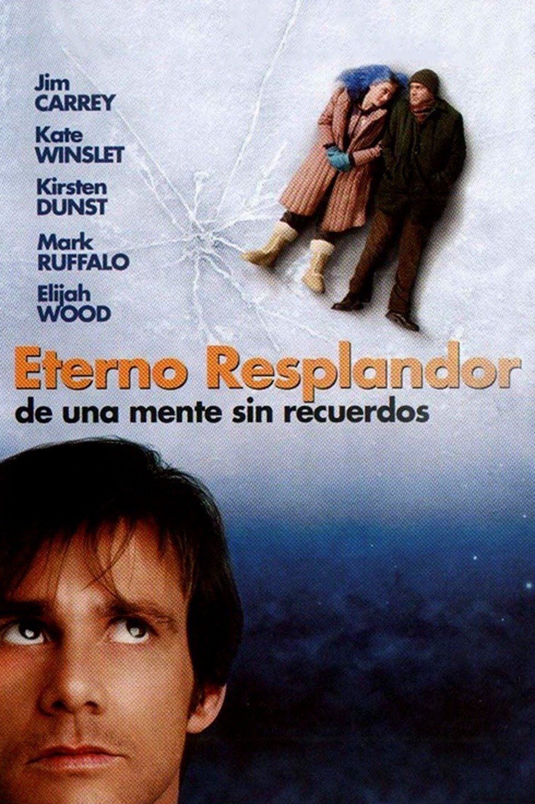

 Eternal Sunshine of the spotless mind
El eterno resplandor de una mente sin recuerdos
Parecian la pareja ideal, su primer encuentro fue magico, pero con el pasar del tiempo
ella deseó nunca haberlo conocido;su anhelo se hace realidad con un polemico y radical invento.
Fecha de estreno: 9 de septiembre de 2004
Director: Michael Gondry
Reparto Principal:
- Jim Carrey
- Kate Winslet
- Elijah Wood
- Kirsten Dunst
- Mark Ruffalo
- Tom Wilkinson
Nota Pablo
8.1/10
Nota IMDb